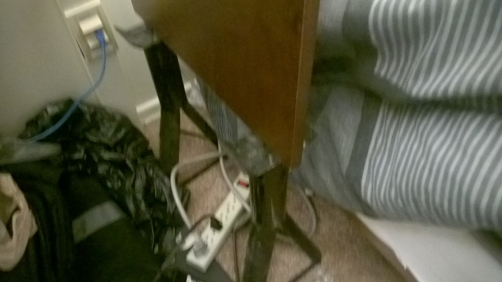
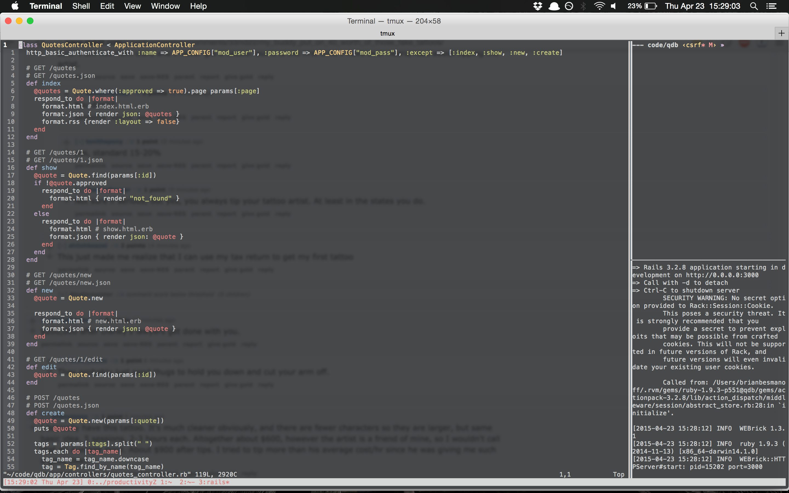
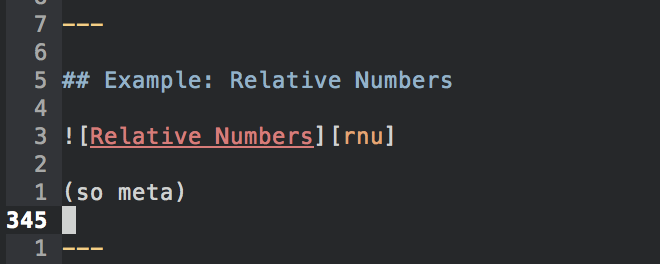

Productivity
Brian Besmanoff
Brian Besmanoff
the quality, state, or fact of being able to generate, create, enhance, or bring forth goods and services
“Measuring programming progress by lines of code is like measuring aircraft building progress by weight.”
-- Bill Gates
http://www.folklore.org/StoryView.py?story=Negative_2000_Lines_Of_Code.txt
Tips and tricks for acheiving productivity

(home row)
Window managers for throwing around windows
Alternative key bindings for applications
Plugins to existing applications
Healthy
Keeps you moving


I  git, vim, and Markdown
git, vim, and Markdown
I  leaving those things
leaving those things
How can I combine these things?
Alias Everything
ls
vim RsaDecrypt.java
c
ga .
gc
c
ls
vim Triplets.java
c
ls
rm Triplets.java
vim Triplet.java
c
ls
vim RsaDecrypt.java
curl -O http://www.cs.rit.edu/\~ark/462/p4/in.txt
make
java RsaDecrypt in.txt
curl -O http://www.cs.rit.edu/\~ark/462/p4/in.txt
make
java RsaDecrypt in.txt
make
java RsaDecrypt in.txt
histor
history
alias ackp='ack --pager="less -R"'
alias agp='ag --pager="less -R"'
alias b='bundle'
alias c='clear'
alias g='git'
alias ga='git add'
alias gap='git add --patch'
alias gb='git branch'
alias gbv='git branch -v'
alias gc='git commit'
alias gca='git commit --amend'
alias gcl='git clean'
alias gclfd='git clean -f -d'
alias gco='git checkout'
alias gcob='git checkout -b'
alias gd='git diff'
alias gdc='git diff --cached'
alias gf='git fetch --all'
alias gg='git log --graph --decorate'
alias git_root='cd $(git rev-parse --show-toplevel) || cd .'
alias gl='git log'
alias gm='git merge --no-ff'
alias gml='git merge --log --no-ff'
alias gp='git push'
alias gpo='git push origin'
alias gr='git reset'
alias greb='git rebase'
alias gref='git reflog'
alias grem='git remote -v'
alias grh='git reset --hard'
alias gs='git status'
alias gst='git stash'
alias gstp='git stash pop'
alias ivm='vim' # I've done this too many times recently
alias l='ls -alh'
alias topten='print -l -- ${(o)history%% *} | uniq -c | sort -nr | head -n 10'
alias v='vagrant'
alias vdvu='vagrant destroy -f && vagrant up'
alias x='exit'
tmux, screen
tmuxifier

$PS1
$PS1
It's always there
Make it work for you
$PS1
%B$PREFIX %2~ $(custom_git_prompt)%{$M%}%B»%b%{$RESET%}
Dotfiles should be quick to move and setup
A collection of <li>'s commented out per item
A collection of <li>'s commented out per item
In vim, ^dW$BhD can do this
@q from anywhere on the line

(so meta)
You don't need all of them
Some are really nice
This was a non-exhaustive list of tips
This was a non-exhaustive list of tips
Try things out